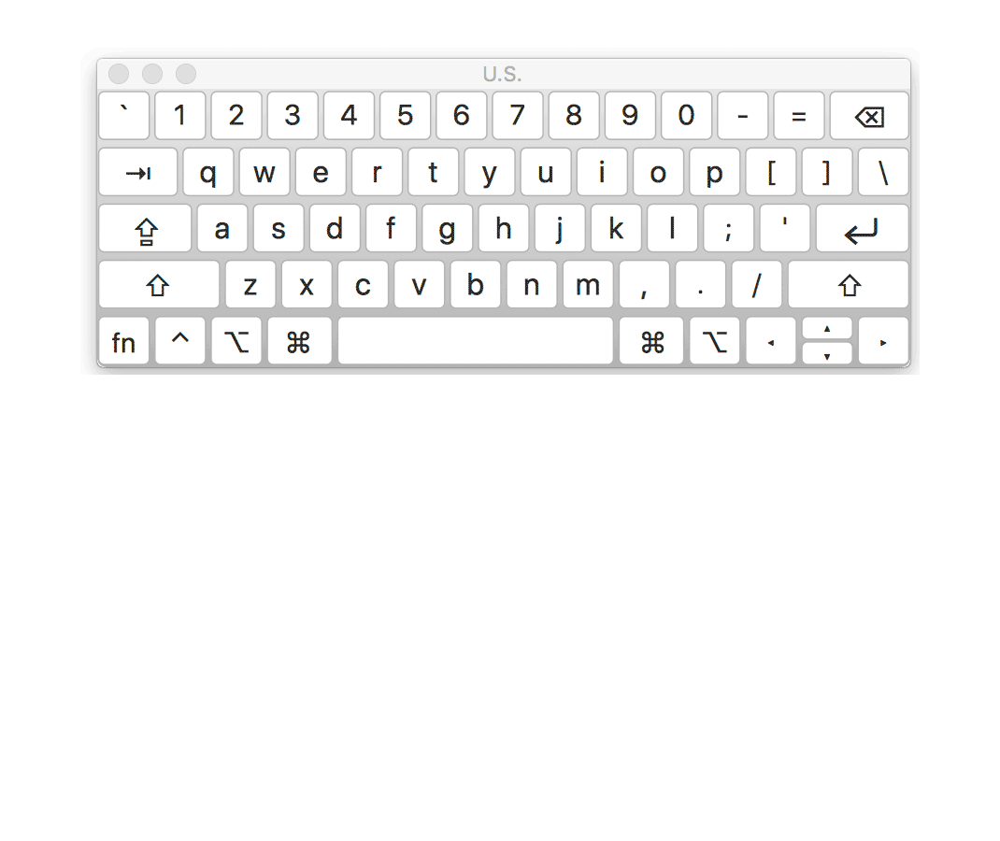
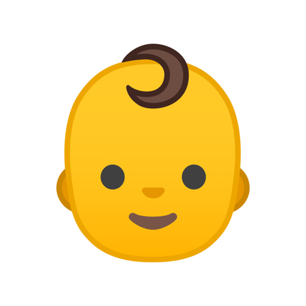

<!DOCTYPE html>
<html>
  <head>
  <title>Infant-Directed Vocalizations</title>
  <script src="jspsych.js"></script>
  <script src="plugins/jspsych-html-keyboard-response.js"></script>
  <script src="plugins/jspsych-audio-keyboard-response-loop.js"></script>
  <script src="plugins/jspsych-preload.js"></script>
	<script src="plugins/jspsych-html-button-response.js"></script>
	<link href="css.css" rel="stylesheet" type="text/css">
  </head>
  <body></body>
  <script>
    var timeline = [];

	var img = ['baby', 'adult'];
	var labelR = jsPsych.randomization.shuffle(img);
	var imgR = [
	  `img/${labelR[0]}.jpg`,
	  `img/${labelR[1]}.jpg`
	];

  var context = null;
  let reaction;
    let count;
    let percentile;
    let reactionMean;


	let imgData1;
	if (labelR[0] == img[0])
	  imgData1 = [
		{ correct_response: 'baby', key: 'f', other_data: 'Key f, left', trialName: 'toWho' },
		{ correct_response: 'adult', key: 'j', other_data: 'Key j, right', trialName: 'toWho' }
	  ];
	if (labelR[0] !== img[0])
	  imgData1 = [
		{ correct_response: 'baby', key: 'j', other_data: 'Key j, right', trialName: 'toWho' },
		{ correct_response: 'adult', key: 'f', other_data: 'Key f, left', trialNaxme: 'toWho' }
	  ];

    var song_list = [{stimulus: `audio/finals/ACO05D.wav`, data1: imgData1[1] },
	{stimulus: `audio/finals/ARA05C.wav`, data: imgData1[1] },
	{stimulus: `audio/finals/BEJ11A.wav`, data: imgData1[0] },
	{stimulus: `audio/finals/HAD04C.wav`, data: imgData1[1] },
	{stimulus: `audio/finals/HAD08B.wav`, data: imgData1[0] },
	{stimulus: `audio/finals/LIM14D.wav`, data: imgData1[1] },
	{stimulus: `audio/finals/MBE10D.wav`, data: imgData1[1] },
	{stimulus: `audio/finals/MEN08D.wav`, data: imgData1[1] },
	{stimulus: `audio/finals/NYA04C.wav`, data: imgData1[1] },
	{stimulus: `audio/finals/PNG02A.wav`, data: imgData1[0] },
	{stimulus: `audio/finals/SPA05B.wav`, data: imgData1[0] },
	{stimulus: `audio/finals/TOR02C.wav`, data: imgData1[1] },
	{stimulus: `audio/finals/TUR15B.wav`, data: imgData1[0] },
	{stimulus: `audio/finals/USD12A.wav`, data: imgData1[0] },
	{stimulus: `audio/finals/VAN15B.wav`, data: imgData1[0] },
	{stimulus: `audio/finals/WEL54A.wav`, data: imgData1[0]}];

    /* generic welcome */
    var welcome = {
      type: 'html-button-response',
      stimulus: `<p align ="center"><b>This is a demonstration experiment. Your responses are not being logged.</b></p>
      <p align="center">This demo only includes the naïve listener experiment trials (including training trials). Participants in the full experiment began by providing informed consent and also responded to a variety of demographic questions before and after the experiment. For the full experience and to view additional items, you may participate in the live experiment distributed via Pushkin at <a href="http://themusiclab.org/quizzes/ids">themusiclab.org</a>.</p>
      <p align="center">Please note that the full experiment also used a weighted random selection of audio excerpts from the full vocalization corpus. This demonstration experiment instead uses a fixed set of 16 excerpts.</p>`,
      prompt1: ' ',
      prompt2: ' ',
      choices: ['Next']
    };

    var whichHands = {
      type: 'html-keyboard-response',
      stimulus: `<p>For this game, you will be using the <b>F</b> and <b>J</b> keys.</p><p>Place your hands on the keyboard, like this.</p><p></p><p>This will help you to enter your answers quickly during the game.<br/>Press any key to continue.</p>`,
      prompt: ''
    };

    /* intro to quiz */
    var ready = {
      type: 'html-keyboard-response',
      stimulus: `<p align="center">In this game, we\'ll play you recordings of people from all over the world. They will either be <b>singing</b> or <b>speaking</b>. We\'ll ask you to tell us <b>who you think is listening</b>: a baby or an adult.</p><p align="center">For example, if you hear someone singing a lullaby, you might answer that you think a <b>baby</b> is listening.</p><p align="center">Try to answer as fast as you can!</p><p align="center">Press any key to continue.</p>`,
      prompt1: '',
      prompt2: ''
    };

    /* training */
    let reactionT;
    /* baby */
    var trainInfo1B = {
      type: 'html-keyboard-response',
      stimulus: `<p align="center">First, let\'s practice! The first excerpt you will hear is a song sung to a baby. So you should choose the <b>BABY</b> character for your response.</p><p><br>The <b>BABY</b> character looks like this.</p><p align="center">Try to answer as fast as you can! Press any key to continue.</p>`,
      prompt1: '',
      prompt2: ''};
    var trainData1B = [
      { stimulus: "audio/pretest/TOR47A.wav", data: imgData1[0] }
    ];
    var training1B = {
      timeline: [
        {
          type: 'audio-keyboard-response-loop',
          stimulus: jsPsych.timelineVariable('stimulus'),
          data: jsPsych.timelineVariable('data'),
          choices: ['f', 'j'],
          prompt: `<p align="center">Someone is speaking or singing. Who do you think they are singing or speaking to?</p><div>Press <b>F</b> for ` +
            labelR[0] +
            ` or <b>J</b> for ` +
            labelR[1] +
            `. </div><br><table align="center" width=80%><tr><td>&nbsp;&nbsp;</td><td>&nbsp;&nbsp;</td></tr><tr><td>&nbsp;<b>F</b>&nbsp;</td><td>&nbsp;<b>J</b>&nbsp;</td></tr></table><br><p>Try to answer as quickly as you can!</p>`,
          response_ends_trial: true,
          on_finish: function(data) {
            data.correct1 = data.key_press == data.key;
            console.log(JSON.stringify(data));
            reactionT = Math.round(data.rt / 1000 * 10) / 10;
            console.log(reactionT);
          }
        },
        {
          type: 'html-keyboard-response',
          stimulus: function() {
            var correct = jsPsych.data.get().last(1).values()[0].correct1;
            var key = jsPsych.data.get().last(1).values()[0].key;
            if (correct == true && key == 'f') {
              return (
                `<div style="font-size:24px"><font color="#00cc00">Correct!</font></div><div style="font-size:18px">You responded in <b>` +
                reactionT +
                ` seconds</b>.</div><div>Press any key to continue.</div><table align="center" width=80%><tr><td>&nbsp;&nbsp;</td><td>&nbsp;&nbsp;</td></tr></table>`
              );
            } else if (correct == true && key == 'j') {
              return (
                `<div style="font-size:24px"><font color="#00cc00">Correct!</font></div><div style="font-size:18px">You responded in <b>` +
                reactionT +
                ` seconds</b>.</div><div>Press any key to continue.</div><table align="center" width=80%><tr><td>&nbsp;&nbsp;</td><td>&nbsp;&nbsp;</td></tr></table>`
              );
            } else if (correct == false && key == 'f') {
              return (
                `<div style="font-size:24px"><font color="red">Incorrect.</font></div><div style="font-size:18px">You responded in <b>` +
                reactionT +
                ` seconds</b>.</div><div>Press any key to try again!</div><table align="center" width=80%><tr><td>&nbsp;&nbsp;</td><td>&nbsp;&nbsp;</td></tr></table>`
              );
              } else if (correct == false && key == 'j') {
              return (
                `<div style="font-size:24px"><font color="red">Incorrect.</font></div><div style="font-size:18px">You responded in <b>` +
                reactionT +
                ` seconds</b>.</div><div>Press any key to try again!</div><table align="center" width=80%><tr><td>&nbsp;&nbsp;</td><td>&nbsp;&nbsp;</td></tr></table>`
              )
              } 
          },
          choices: jsPsych.ALL_KEYS,
          prompt:'',
          on_finish: function(data){
          }
        }
      ],
      timeline_variables: trainData1B,
      sample: {
        size: 1,
        type: 'without-replacement'
      }
    };
    var reTrain1B = {
      timeline: [training1B],
      loop_function: function(data) {
        if (imgData1[1].key == data.values()[0].key_press) {
          return true;
        } else {
          return false;
        }
      }
    };
    var trainInfo1A = {
      type: 'html-keyboard-response',
      stimulus:
        `<p align="center">Let\'s practice a second time. This next excerpt will be directed toward an adult, so you should choose the <b>ADULT</b> character.</p><p><br>The <b>ADULT</b> character looks like this.</p><p align="center">Try to answer as quickly as possible! Press any key to continue.</p>`,
    };
    /* adult */
    var trainData1A = [
      { stimulus: `audio/pretest/WEL10C.wav`, data: imgData1[1] }
    ];
    var training1A = {
      timeline: [
        {
          type: 'audio-keyboard-response-loop',
          stimulus: jsPsych.timelineVariable('stimulus'),
          data: jsPsych.timelineVariable('data'),
          choices: ['f', 'j'],
          prompt: `<p align="center">Someone is speaking or singing. Who do you think they are singing or speaking to?</p><div>Press <b>F</b> for ` +
            labelR[0] +
            ` or <b>J</b> for ` +
            labelR[1] +
            `. </div><br><table align="center" width=80%><tr><td>&nbsp;&nbsp;</td><td>&nbsp;&nbsp;</td></tr><tr><td>&nbsp;<b>F</b>&nbsp;</td><td>&nbsp;<b>J</b>&nbsp;</td></tr></table><br><p>Try to answer as quickly as you can!</p>`,
          response_ends_trial: true,
          on_finish: function(data) {
            data.correct1 = data.key_press == data.key;
            console.log(JSON.stringify(data));
            reactionT = Math.round(data.rt / 1000 * 10) / 10;
            console.log(reactionT);
          }
        },
        {
          type: 'html-keyboard-response',
          stimulus: function() {
            var correct = jsPsych.data.get().last(1).values()[0].correct1;
            var key = jsPsych.data.get().last(1).values()[0].key_press;
            var button = jsPsych.data.get().last(1).values()[0].button_pressed;
            if (correct == true && key == 'f') {
              return (
                `<div style="font-size:24px"><font color="#00cc00">Correct!</font></div><div style="font-size:18px">You responded in <b>` +
                reactionT +
                ` seconds</b>.</div><div>Press any key to continue.</div><table align="center" width=80%><tr><td>&nbsp;&nbsp;</td><td>&nbsp;&nbsp;</td></tr></table>`
              );
            } else if (correct == true && key == 'j') {
              return (
                `<div style="font-size:24px"><font color="#00cc00">Correct!</font></div><div style="font-size:18px">You responded in <b>` +
                reactionT +
                ` seconds</b>.</div><div>Press any key to continue.</div><table align="center" width=80%><tr><td>&nbsp;&nbsp;</td><td>&nbsp;&nbsp;</td></tr></table>`
              );
            } else if (correct == false && key == 'f') {
              return (
                `<div style="font-size:24px"><font color="red">Incorrect.</font></div><div style="font-size:18px">You responded in <b>` +
                reactionT +
                ` seconds</b>.</div><div>Press any key to try again!</div><table align="center" width=80%><tr><td>&nbsp;&nbsp;</td><td>&nbsp;&nbsp;</td></tr></table>`
              );
            } else if (correct == false && key == 'j') {
              return (
                `<div style="font-size:24px"><font color="red">Incorrect.</font></div><div style="font-size:18px">You responded in <b>` +
                reactionT +
                ` seconds</b>.</div><div>Press any key to try again!</div><table align="center" width=80%><tr><td>&nbsp;&nbsp;</td><td>&nbsp;&nbsp;</td></tr></table>`
              )
            } 
          },
          prompt: ''
        }
      ],
      timeline_variables: trainData1A,
      sample: {
        size: 1,
        type: 'without-replacement'
      }
    };
    var reTrain1A = {
      timeline: [training1A],
      loop_function: function(data) {
        if (imgData1[0].key == data.values()[0].key_press) {
          return true;
        } else {
          return false;
        }
      }
    };

    /* real study begins here! */
    var introTest = {
      type: 'html-keyboard-response',
      stimulus: `<p>Great work on the practice! Now you\'re ready to begin.</p><p>Press any key to continue.</p>`,
    };
    var songTest = {
      timeline: [
        {
          type: 'audio-keyboard-response-loop',
          stimulus: jsPsych.timelineVariable('stimulus'),
          data: jsPsych.timelineVariable('data'),
          choices: ['f', 'j'],
          prompt: `<p align="center">Someone is speaking or singing. Who do you think they are singing or speaking to?</p><div>Press <b>F</b> for ` +
            labelR[0] +
            ` or <b>J</b> for ` +
            labelR[1] +
            `. </div><br><table align="center" width=80%><tr><td>&nbsp;&nbsp;</td><td>&nbsp;&nbsp;</td></tr><tr><td>&nbsp;<b>F</b>&nbsp;</td><td>&nbsp;<b>J</b>&nbsp;</td></tr></table><br><p>Try to answer as quickly as you can!</p>`,
          response_ends_trial: true,
          on_finish: function(data) {
            data.correct = data.key_press == data.key;
            reaction = Math.round(data.rt / 1000 * 10) / 10;
            count = jsPsych.data.get().filter({ correct: true }).count();
            console.log(count);
            if (count == "16") percentile = "100%";
            if (count == "15") percentile = "99.8%";
            if (count == "14") percentile = "98%";
            if (count == "13") percentile = "93%";
            if (count == "12") percentile = "81%";
            if (count == "11") percentile = "63%";
            if (count == "10") percentile = "43%";
            if (count == "9") percentile = "26%";
            if (count == "8") percentile = "14%";
            if (count == "7") percentile = "6%";
            if (count == "6") percentile = "2%";
            if (count <= "5") percentile = "1%";
            console.log('percentile')
          }
        },
        {
          type: 'html-keyboard-response',
          stimulus: function() {
            var correct = jsPsych.data.get().last(1).values()[0].correct;
            console.log(correct);
            var key = jsPsych.data.get().last(1).values()[0].key_press;
            if (correct == true && key == 'f') {
              return (
                `<div style="font-size:24px"><font color="#00cc00">Correct!</font></div><div style="font-size:18px">You responded in <b>` +reaction +` seconds</b>.</div><div>Press any key to continue.</div><table align="center" width=80%><tr><td>&nbsp;&nbsp;</td><td>&nbsp;&nbsp;</td></tr></table>`);
              } else if (correct == true && key == 'j') {
                return (
                  `<div style="font-size:24px"><font color="#00cc00">Correct!</font></div><div style="fon t-size:18px">You responded in <b>` +reaction +` seconds</b>.</div><div>Press any key to continue.</div><table align="center" width=80%><tr><td>&nbsp;&nbsp;</td><td>&nbsp;&nbsp;</td></tr></table>`
                );
              } else if (correct == false && key == 'f') {
                return (
                  `<div style="font-size:24px"><font color="red">Incorrect.</font></div><div style="font-size:18px">You responded in <b>` +reaction +` seconds</b>.</div><div>Press any key to try again!</div><table align="center" width=80%><tr><td>&nbsp;&nbsp;</td><td>&nbsp;&nbsp;</td></tr></table>`
                );
              } else if (correct == false && key == 'j') {
                return (
                  `<div style="font-size:24px"><font color="red">Incorrect.</font></div><div style="font-size:18px">You responded in <b>` +reaction +` seconds</b>.</div><div>Press any key to try again!</div><table align="center" width=80%><tr><td>&nbsp;&nbsp;</td><td>&nbsp;&nbsp;</td></tr></table>`
                  );
            } 
          },
          prompt: '',
          on_finish: function(data) {
            reactionMean = Math.round(jsPsych.data.get().filter({trial_type:'audio-keyboard-response-loop'}).select('rt').mean()/1000*10)/10;
          }
        }
      ],
      timeline_variables: song_list,
      sample: {
        size: 16,
        type: 'without-replacement'
      }
    };

    var social = {
      type: 'html-button-response',
      stimulus: `<p align="center"><strong>This concludes the demonstration experiment.</strong></p> 
      <p align="center">In the full experiment, participants answered a variety of follow-up questions and were also given the opportunity to provide free-text feedback concerning their experience. The full experiment concluded with a debriefing and a presentation of the participant's results (accuracy, response time, and percentile rank).</p>
      <p align="center">To view these parts of the experiment, you may participate in the full experiment at <a href="http://themusiclab.org/quizzes/ids">themusiclab.org</a>.</p>`,
      prompt1: ' ',
      prompt2: ' ',
      choices: ['End']
    };

    timeline.push(
      welcome,
      whichHands,
      ready,
      trainInfo1B,
      reTrain1B,
      trainInfo1A,
      reTrain1A,
      introTest,
      songTest,
      social,
    );

    var audioPreload = [
      song_list[0].stimulus,
      song_list[1].stimulus,
      song_list[2].stimulus,
      song_list[3].stimulus,
      song_list[4].stimulus,
      song_list[5].stimulus,
      song_list[6].stimulus,
      song_list[7].stimulus,
      song_list[8].stimulus,
      song_list[9].stimulus,
      song_list[10].stimulus,
      song_list[11].stimulus,
      song_list[12].stimulus,
      song_list[13].stimulus,
      song_list[14].stimulus,
      song_list[15].stimulus,
      "audio/pretest/WEL10C.wav",
      "audio/pretest/TOR47A.wav" 
    ];

    jsPsych.init({
      timeline: timeline,
      preload_audio: audioPreload,
      use_webaudio: false,
      on_trial_finish: function(data) {
        window.scrollTo(0,0)
      }
    });

</script>
</html>